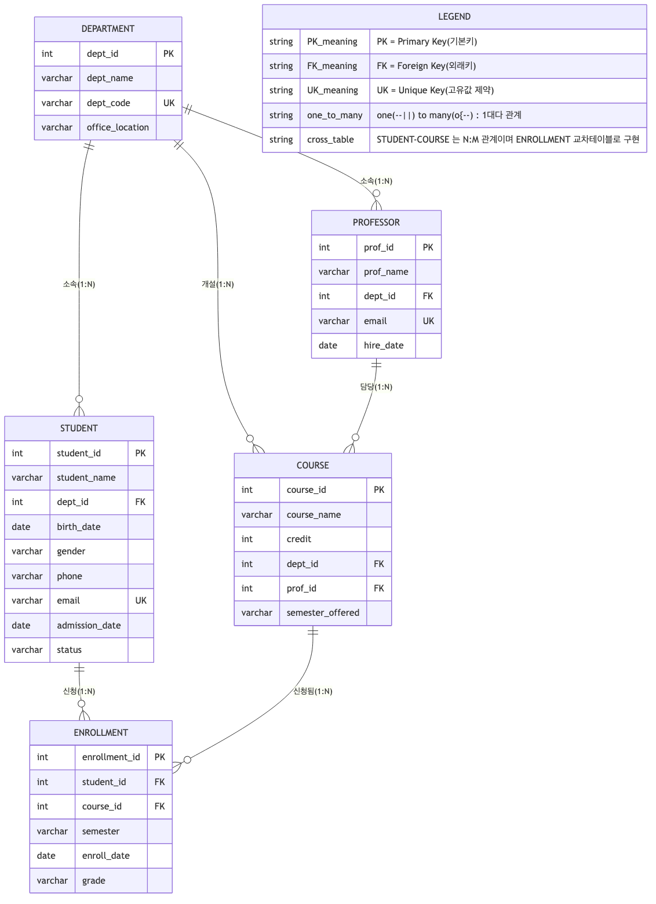

학사관리시스템의 핵심 업무(학과/교수/학생/과목/수강신청)를 정규화된 관계형 모델로 설계하고, PostgreSQL 위에 실제로 구축한다.

우측 상단 LEGEND 박스에 PK/FK/UK 표기 의미와 1:N, N:M(교차테이블) 표기 규칙을 설명문으로 명시함. 각 관계선은 서로 겹치지 않도록 배치.
| 항목 | 내용 |
|---|---|
| 설치 | brew install postgresql@17 (버전 17.10) |
| 포트 | 5433 (시스템에 기존 PostgreSQL 18 서비스가 5432를 사용 중이어서 충돌 방지를 위해 변경) |
| DB / Schema | academy / academy_schema |
| 접속 계정 | nys (ALTER USER 로 비밀번호 지정 완료) |
$ psql -p 5433 academy
접속정보: 데이터베이스="academy", 사용자="nys", 소켓="/tmp", 포트="5433".
스키마 목록
------------------------------------
academy_schema | nys
public | pg_database_owner
(2개 행)
릴레이션 목록
------------------------------------------------
academy_schema | course | 테이블 | nys
academy_schema | department | 테이블 | nys
academy_schema | enrollment | 테이블 | nys
academy_schema | professor | 테이블 | nys
academy_schema | student | 테이블 | nys
(5개 행)
department(학과) → professor(교수) → student(학생) → course(과목) → enrollment(수강신청, 교차 테이블) 순으로 생성 (FK 참조 순서 고려).
CREATE TABLE department (
dept_id SERIAL PRIMARY KEY,
dept_name VARCHAR(50) NOT NULL,
dept_code VARCHAR(10) NOT NULL UNIQUE,
office_location VARCHAR(50)
);
CREATE TABLE professor (
prof_id SERIAL PRIMARY KEY,
prof_name VARCHAR(30) NOT NULL,
dept_id INT NOT NULL REFERENCES department(dept_id),
email VARCHAR(100) NOT NULL UNIQUE,
hire_date DATE NOT NULL DEFAULT CURRENT_DATE
);
CREATE TABLE student (
student_id SERIAL PRIMARY KEY,
student_name VARCHAR(30) NOT NULL,
dept_id INT NOT NULL REFERENCES department(dept_id),
birth_date DATE,
gender CHAR(1) CHECK (gender IN ('M', 'F')),
phone VARCHAR(20),
email VARCHAR(100) UNIQUE,
admission_date DATE NOT NULL DEFAULT CURRENT_DATE,
status VARCHAR(10) NOT NULL DEFAULT '재학'
CHECK (status IN ('재학', '휴학', '졸업', '자퇴'))
);
CREATE TABLE course (
course_id SERIAL PRIMARY KEY,
course_name VARCHAR(50) NOT NULL,
credit INT NOT NULL CHECK (credit BETWEEN 1 AND 6),
dept_id INT NOT NULL REFERENCES department(dept_id),
prof_id INT REFERENCES professor(prof_id),
semester_offered VARCHAR(20)
);
CREATE TABLE enrollment (
enrollment_id SERIAL PRIMARY KEY,
student_id INT NOT NULL REFERENCES student(student_id),
course_id INT NOT NULL REFERENCES course(course_id),
semester VARCHAR(20) NOT NULL,
enroll_date DATE NOT NULL DEFAULT CURRENT_DATE,
grade VARCHAR(2) CHECK (grade IN ('A+','A','B+','B','C+','C','D+','D','F')),
UNIQUE (student_id, course_id, semester)
);CREATE TABLE (x5, 실행 성공)
INSERT 0 10 -- department (10건) INSERT 0 12 -- professor (12건) INSERT 0 15 -- student (15건) INSERT 0 12 -- course (12건) INSERT 0 25 -- enrollment (25건, 학생-과목 교차 테이블)
SELECT student_id, student_name, admission_date, status
FROM student
WHERE dept_id = 1
ORDER BY admission_date DESC; student_id | student_name | admission_date | status
------------+--------------+----------------+--------
1 | 김민서 | 2023-03-02 | 재학
15 | 문채원 | 2023-03-02 | 재학
2 | 이준호 | 2022-03-02 | 재학
(3개 행)
SELECT course_id, course_name, credit, semester_offered
FROM course
WHERE credit = 3
ORDER BY course_name ASC; course_id | course_name | credit | semester_offered
-----------+----------------+--------+------------------
1 | 데이터베이스 | 3 | 2026-1
3 | 디지털논리회로 | 3 | 2026-1
5 | 마케팅원론 | 3 | 2026-1
9 | 선형대수학 | 3 | 2026-1
4 | 열역학 | 3 | 2026-1
11 | 유기화학 | 3 | 2026-1
10 | 일반물리학 | 3 | 2026-1
2 | 자료구조 | 3 | 2026-1
6 | 회계원리 | 3 | 2026-1
(9개 행)
SELECT student_id, student_name, admission_date, status
FROM student
WHERE status = '재학'
AND admission_date >= '2022-01-01'
ORDER BY admission_date ASC; student_id | student_name | admission_date | status
------------+--------------+----------------+--------
2 | 이준호 | 2022-03-02 | 재학
6 | 강도현 | 2022-03-02 | 재학
7 | 조수빈 | 2023-03-02 | 재학
10 | 한소율 | 2023-03-02 | 재학
13 | 배건우 | 2023-03-02 | 재학
1 | 김민서 | 2023-03-02 | 재학
15 | 문채원 | 2023-03-02 | 재학
4 | 최윤아 | 2023-03-02 | 재학
(8개 행)
SELECT student_name,
COALESCE(phone, '연락처 미등록') AS phone,
COALESCE(email, '이메일 미등록') AS email
FROM student
ORDER BY student_id;student_name | phone | email --------------+---------------+------------------------- 김민서 | 010-1111-2222 | minseo.kim@univ.ac.kr 이준호 | 010-2222-3333 | junho.lee@univ.ac.kr 박서준 | 연락처 미등록 | seojun.park@univ.ac.kr 최윤아 | 010-4444-5555 | 이메일 미등록 정하은 | 010-5555-6666 | haeun.jung@univ.ac.kr 강도현 | 010-6666-7777 | dohyun.kang@univ.ac.kr 조수빈 | 연락처 미등록 | subin.cho@univ.ac.kr 윤태양 | 010-8888-9999 | taeyang.yoon@univ.ac.kr 임지민 | 010-9999-0000 | jimin.lim@univ.ac.kr 한소율 | 010-1212-3434 | soyul.han@univ.ac.kr 오민재 | 010-1313-2424 | minjae.oh@univ.ac.kr 신예린 | 연락처 미등록 | 이메일 미등록 배건우 | 010-1414-2525 | gunwoo.bae@univ.ac.kr 서지훈 | 010-1515-2626 | jihoon.seo@univ.ac.kr 문채원 | 010-1616-2727 | chaewon.moon@univ.ac.kr (15개 행)
SELECT e.enrollment_id, s.student_name, c.course_name, e.semester, e.grade,
CASE
WHEN e.grade IN ('A+', 'A') THEN '우수'
WHEN e.grade IN ('B+', 'B') THEN '보통'
WHEN e.grade IN ('C+', 'C', 'D+', 'D') THEN '미흡'
WHEN e.grade = 'F' THEN '낙제'
ELSE '진행중(성적 미입력)'
END AS grade_level
FROM enrollment e
JOIN student s ON s.student_id = e.student_id
JOIN course c ON c.course_id = e.course_id
ORDER BY e.semester DESC, s.student_name; enrollment_id | student_name | course_name | semester | grade | grade_level
---------------+--------------+----------------+----------+-------+---------------------
24 | 강도현 | 심리학개론 | 2026-1 | | 진행중(성적 미입력)
8 | 강도현 | 열역학 | 2026-1 | | 진행중(성적 미입력)
1 | 김민서 | 데이터베이스 | 2026-1 | | 진행중(성적 미입력)
2 | 김민서 | 자료구조 | 2026-1 | | 진행중(성적 미입력)
20 | 문채원 | 자료구조 | 2026-1 | | 진행중(성적 미입력)
19 | 문채원 | 데이터베이스 | 2026-1 | | 진행중(성적 미입력)
17 | 배건우 | 유기화학 | 2026-1 | | 진행중(성적 미입력)
15 | 오민재 | 선형대수학 | 2026-1 | | 진행중(성적 미입력)
4 | 이준호 | 자료구조 | 2026-1 | | 진행중(성적 미입력)
3 | 이준호 | 데이터베이스 | 2026-1 | | 진행중(성적 미입력)
10 | 조수빈 | 회계원리 | 2026-1 | | 진행중(성적 미입력)
9 | 조수빈 | 마케팅원론 | 2026-1 | | 진행중(성적 미입력)
23 | 최윤아 | 유기화학 | 2026-1 | | 진행중(성적 미입력)
6 | 최윤아 | 디지털논리회로 | 2026-1 | | 진행중(성적 미입력)
14 | 한소율 | 영미문학개론 | 2026-1 | | 진행중(성적 미입력)
21 | 김민서 | 선형대수학 | 2025-2 | B+ | 보통
5 | 박서준 | 디지털논리회로 | 2025-2 | B+ | 보통
18 | 서지훈 | 심리학개론 | 2025-2 | A | 우수
16 | 신예린 | 일반물리학 | 2025-2 | B | 보통
12 | 윤태양 | 회계원리 | 2025-2 | B | 보통
11 | 윤태양 | 마케팅원론 | 2025-2 | A+ | 우수
22 | 이준호 | 일반물리학 | 2025-2 | A | 우수
25 | 임지민 | 영미문학개론 | 2025-2 | B | 보통
13 | 임지민 | 한국문학사 | 2025-2 | C+ | 미흡
7 | 정하은 | 열역학 | 2025-2 | A | 우수
(25개 행)
SELECT student_name, birth_date,
EXTRACT(YEAR FROM AGE(CURRENT_DATE, birth_date)) AS age,
admission_date,
EXTRACT(YEAR FROM AGE(CURRENT_DATE, admission_date)) * 12
+ EXTRACT(MONTH FROM AGE(CURRENT_DATE, admission_date)) AS months_enrolled
FROM student
ORDER BY age DESC;student_name | birth_date | age | admission_date | months_enrolled --------------+------------+-----+----------------+----------------- 정하은 | 2001-05-18 | 25 | 2020-03-02 | 76 서지훈 | 2001-09-19 | 24 | 2020-03-02 | 76 윤태양 | 2002-12-25 | 23 | 2021-03-02 | 64 박서준 | 2002-11-05 | 23 | 2021-03-02 | 64 이준호 | 2003-07-22 | 23 | 2022-03-02 | 52 오민재 | 2002-08-08 | 23 | 2021-03-02 | 64 임지민 | 2003-02-14 | 23 | 2022-03-02 | 52 김민서 | 2004-03-15 | 22 | 2023-03-02 | 40 최윤아 | 2004-01-30 | 22 | 2023-03-02 | 40 강도현 | 2003-09-09 | 22 | 2022-03-02 | 52 조수빈 | 2004-04-04 | 22 | 2023-03-02 | 40 한소율 | 2004-06-06 | 22 | 2023-03-02 | 40 신예린 | 2003-10-10 | 22 | 2022-03-02 | 52 배건우 | 2004-02-02 | 22 | 2023-03-02 | 40 문채원 | 2004-11-11 | 21 | 2023-03-02 | 40 (15개 행)
SELECT s.student_name, d.dept_name, c.course_name, p.prof_name AS professor, c.credit, e.semester
FROM enrollment e
JOIN student s ON s.student_id = e.student_id
JOIN department d ON d.dept_id = s.dept_id
JOIN course c ON c.course_id = e.course_id
JOIN professor p ON p.prof_id = c.prof_id
WHERE e.semester = '2026-1'
ORDER BY d.dept_name, s.student_name;student_name | dept_name | course_name | professor | credit | semester --------------+--------------+----------------+-----------+--------+---------- 조수빈 | 경영학과 | 마케팅원론 | 정하윤 | 3 | 2026-1 조수빈 | 경영학과 | 회계원리 | 강서준 | 3 | 2026-1 강도현 | 기계공학과 | 심리학개론 | 신예은 | 2 | 2026-1 강도현 | 기계공학과 | 열역학 | 최지우 | 3 | 2026-1 오민재 | 수학과 | 선형대수학 | 임수아 | 3 | 2026-1 한소율 | 영어영문학과 | 영미문학개론 | 윤지호 | 2 | 2026-1 최윤아 | 전자공학과 | 유기화학 | 오유진 | 3 | 2026-1 최윤아 | 전자공학과 | 디지털논리회로 | 박도윤 | 3 | 2026-1 김민서 | 컴퓨터공학과 | 데이터베이스 | 김민준 | 3 | 2026-1 김민서 | 컴퓨터공학과 | 자료구조 | 이서연 | 3 | 2026-1 문채원 | 컴퓨터공학과 | 자료구조 | 이서연 | 3 | 2026-1 문채원 | 컴퓨터공학과 | 데이터베이스 | 김민준 | 3 | 2026-1 이준호 | 컴퓨터공학과 | 데이터베이스 | 김민준 | 3 | 2026-1 이준호 | 컴퓨터공학과 | 자료구조 | 이서연 | 3 | 2026-1 배건우 | 화학과 | 유기화학 | 오유진 | 3 | 2026-1 (15개 행)
SELECT c.course_name, p.prof_name AS professor, COUNT(e.enrollment_id) AS enrolled_count
FROM course c
LEFT JOIN professor p ON p.prof_id = c.prof_id
LEFT JOIN enrollment e ON e.course_id = c.course_id
GROUP BY c.course_id, c.course_name, p.prof_name
ORDER BY enrolled_count DESC, c.course_name;course_name | professor | enrolled_count ----------------+-----------+---------------- 데이터베이스 | 김민준 | 3 자료구조 | 이서연 | 3 디지털논리회로 | 박도윤 | 2 마케팅원론 | 정하윤 | 2 선형대수학 | 임수아 | 2 심리학개론 | 신예은 | 2 열역학 | 최지우 | 2 영미문학개론 | 윤지호 | 2 유기화학 | 오유진 | 2 일반물리학 | 한도현 | 2 회계원리 | 강서준 | 2 한국문학사 | 조은우 | 1 (12개 행)
SELECT s.student_name,
COUNT(e.enrollment_id) AS total_enrollments,
SUM(CASE WHEN e.grade IS NOT NULL THEN c.credit ELSE 0 END) AS earned_credits
FROM student s
JOIN enrollment e ON e.student_id = s.student_id
JOIN course c ON c.course_id = e.course_id
GROUP BY s.student_id, s.student_name
ORDER BY earned_credits DESC;student_name | total_enrollments | earned_credits --------------+-------------------+---------------- 윤태양 | 2 | 6 임지민 | 2 | 4 박서준 | 1 | 3 신예린 | 1 | 3 김민서 | 3 | 3 정하은 | 1 | 3 이준호 | 3 | 3 서지훈 | 1 | 2 강도현 | 2 | 0 문채원 | 2 | 0 최윤아 | 2 | 0 한소율 | 1 | 0 오민재 | 1 | 0 배건우 | 1 | 0 조수빈 | 2 | 0 (15개 행)